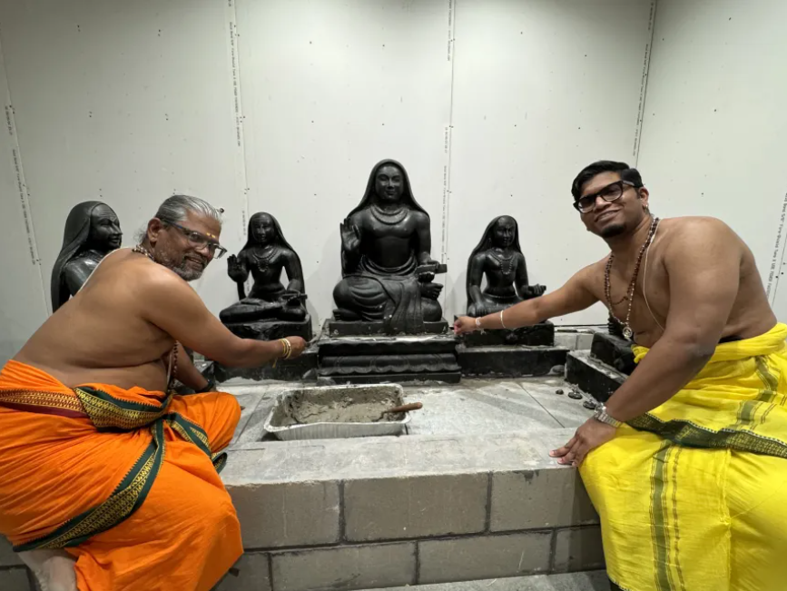

Last weekend, there was a pranaprathishta conducted for new Pillayar vigraham at Ganesh Gayathri Temple (GG Temple) in Chicagoland. I saw Sri Vanamurthi in the event as Sthapathi. Vanamurthi is an old timer in Chicagoland associated with Lemont Hindu Temple. He studied under Padmabhushan Sri Ganapthi Sthapathi and had attended kumbabhishekams where Mahaperiyava attended. He is known to many in US. It has been a long time since I last saw him. I was talking to him for some time and later I saw a boy working with him in installing yantra, applying marundhu etc. After some time I asked vanamurthi about that boy and figured out that he is his own son. I was pleasantly surprised and to add to my surprise he told that his son (Karthik is the name I think) has participated in more than 15+ kumbabishekam work in US even during Covid days and he is very familiar with all the Sthapathi related nuisances/guidelines etc. On educational side, he is currently pursuing his medical degree in one of US’ top notch schools – Northwestern in Chicago. I was awestruck to hear how well this boy was brought up. He was very humble, respectful – quite impressed with him. It is heartening to see such a wonderful kid! Couldn’t resist from sharing here!
I suggested Vanamurthi to go Kanchipuram and get darshan of Periyava along with his son as Periyava will be very happy to know how well his son is a perfect blend of our culture and this generation kid.
The pillayar vigraham was done by Sri Nandakumar Sthapathi of Kanchipuram. The event went really well. In August all prana prathishtas would be over and temple will be re-opened for public.
